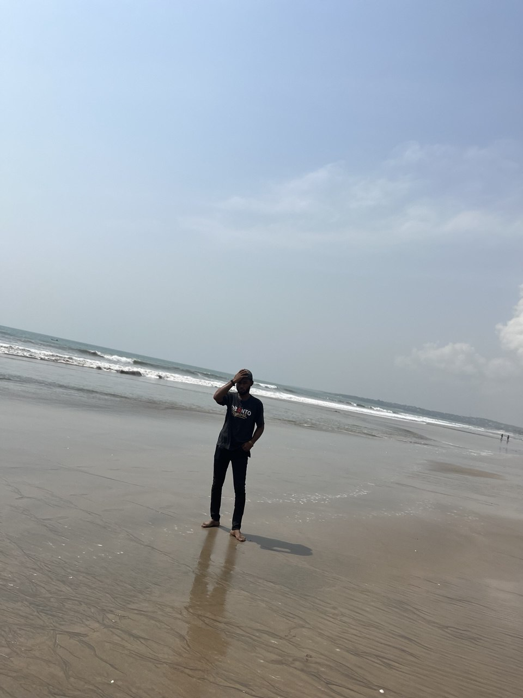
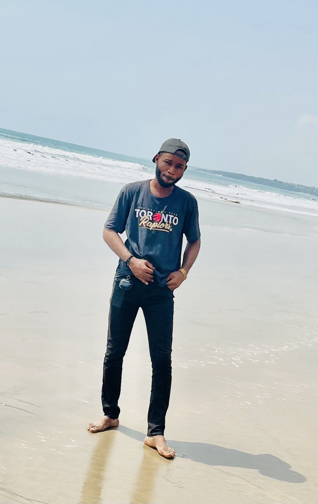
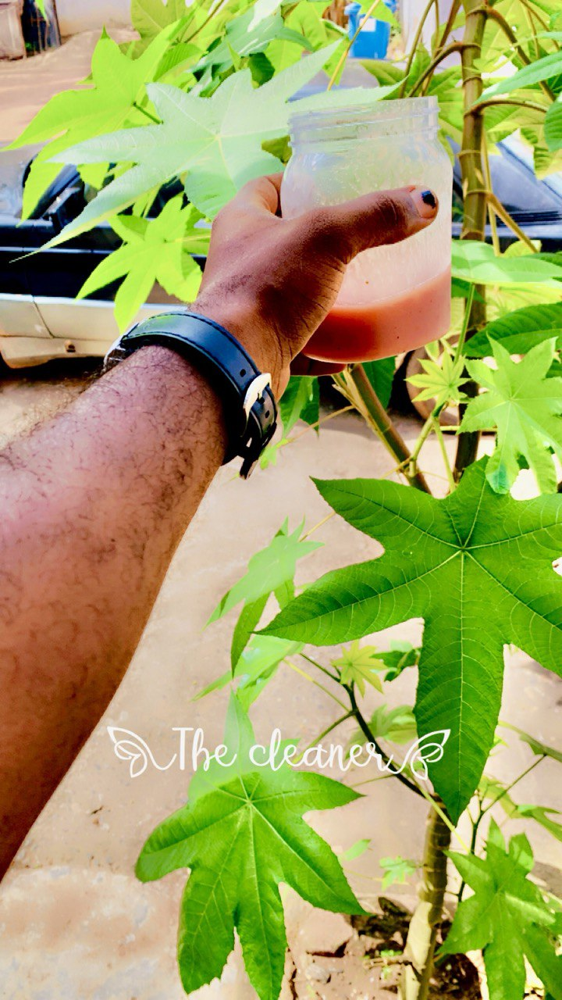
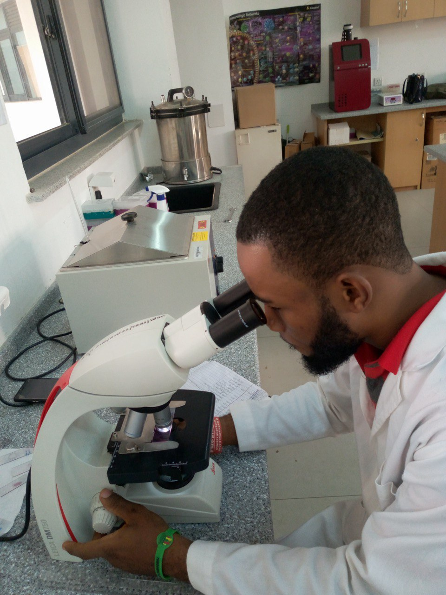
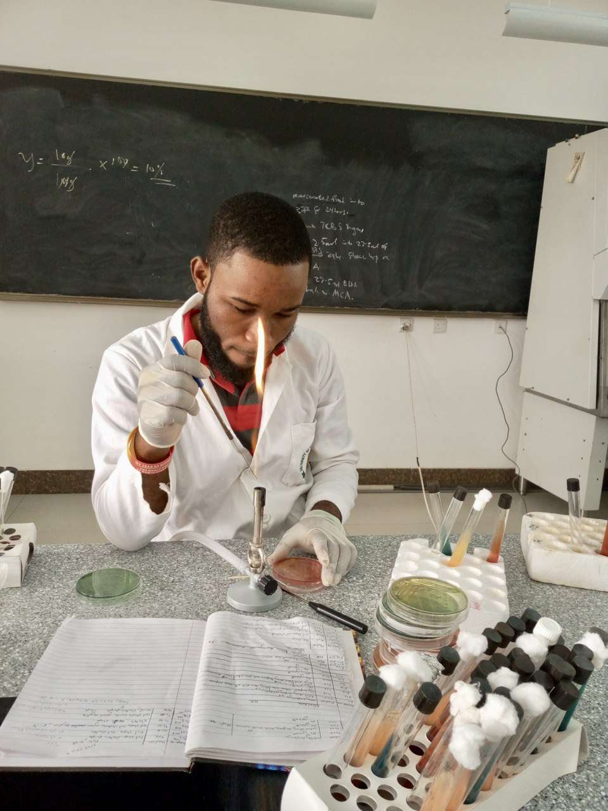
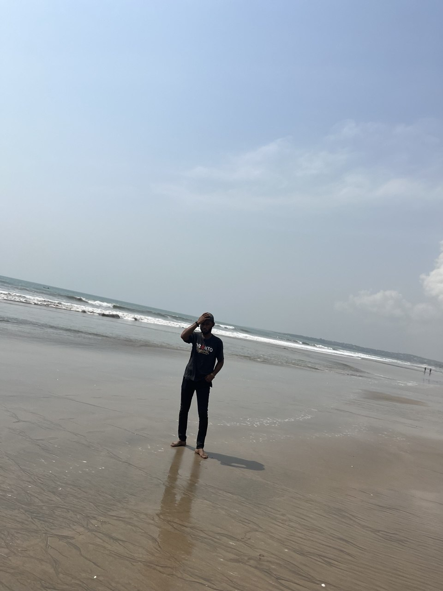
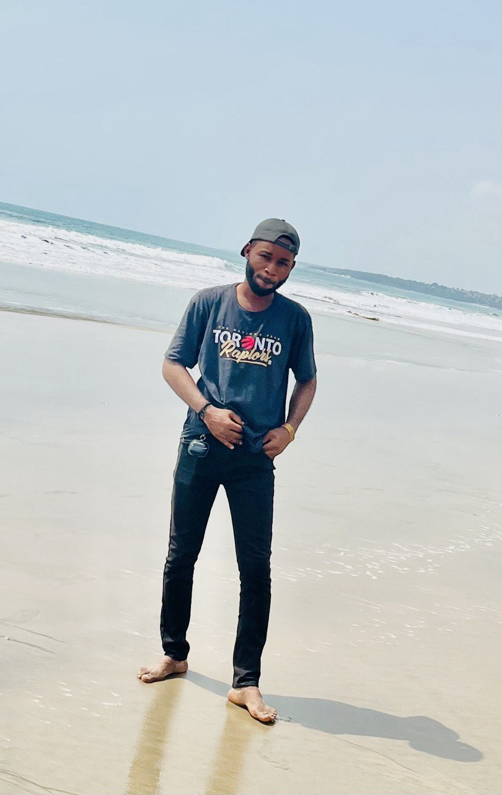
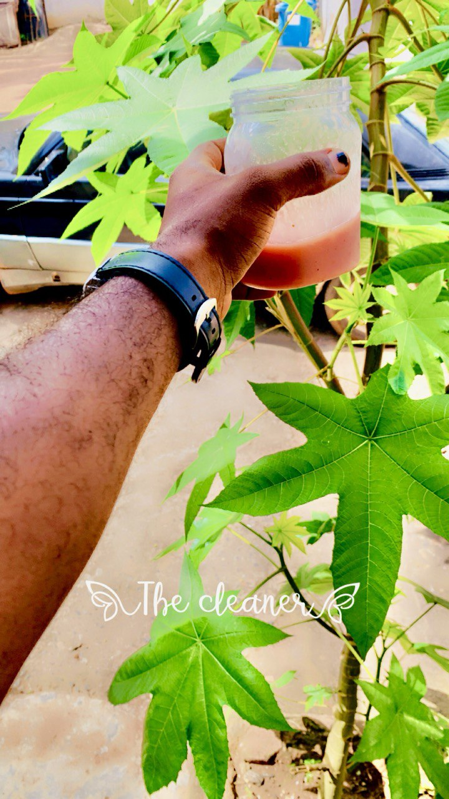
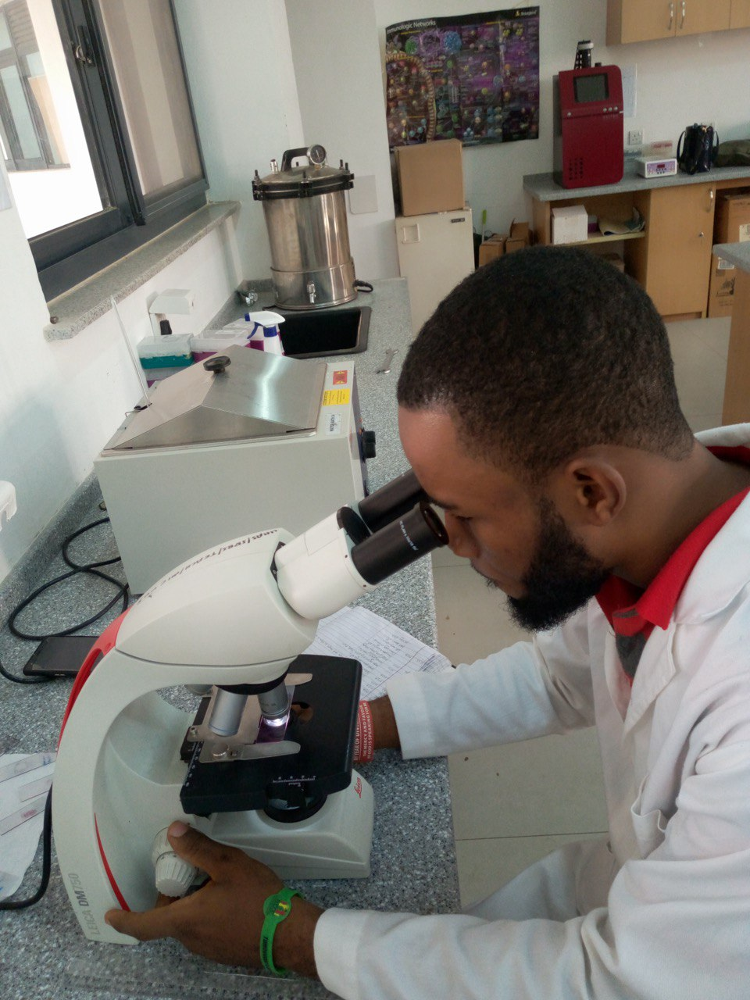
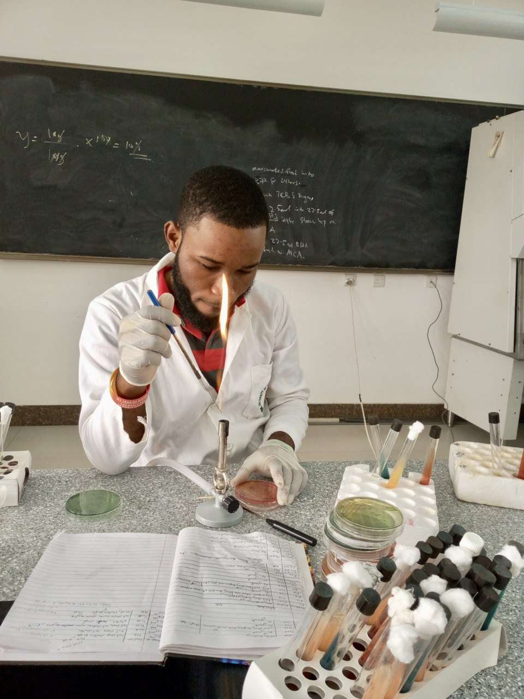

🌙
I’m a passionate front-end developer and UI/UX designer with a degree in Medical Biochemistry and Molecular Biology. While my academic path began in science, I’ve always been fascinated by the intersection of art and technology. That curiosity pulled me toward the world of programming and design, eventually leading me to a fulfilling career in web development.
In 2020, I decided to make a bold shift. I began teaching myself HTML, CSS, and JavaScript. Later, I joined Amalitech and completed an intensive 6-month bootcamp with over 400 hours of training and mentorship. It was during this time that I truly began crafting end-to-end user experiences and deepening my design thinking.
I'm committed to building seamless, user-friendly digital experiences. Currently, I’m expanding my skills further by learning Flutter for mobile development, UI/UX design methodologies, and ethical hacking. I'm also on a journey to becoming a data analyst—adding data-driven decision-making to my creative and technical toolkit.
What excites me most about being a developer is solving real-world problems with purpose-driven design. For me, it's not just about building buttons or pages—it’s about understanding users, identifying the right problems, delivering fast solutions, learning from feedback, and iterating to create lasting value. That’s the heart of great product design.
Beyond the screen, I love exploring the world—whether that means traveling to new places, experiencing diverse cultures, or cruising down open roads on my motorbike. I’m also a movie lover and music enthusiast, constantly seeking inspiration from the world around me.
Combining my scientific background with a passion for technology gives me a unique lens for approaching challenges—with precision, creativity, and empathy. I’m excited about what lies ahead and look forward to building meaningful digital experiences that make a difference.
One of my favorite quotes, by Peter Drucker:
"The best way to predict the future is to create it."
 








